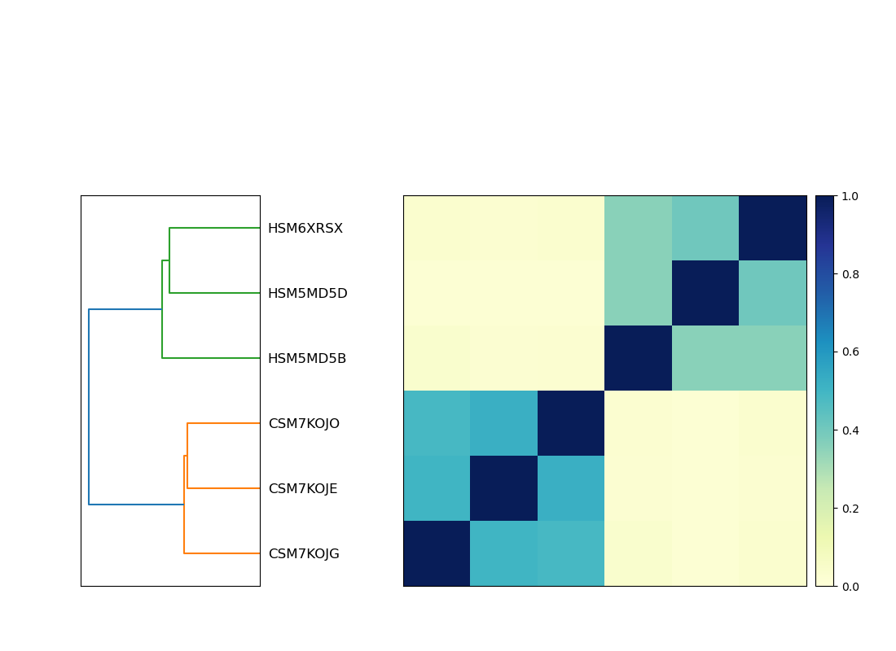

Comparing Samples with Sourmash
Many metagenomics projects are designed to assess the differences between microorganism composition between samples.
There are many ways to get at this question, but we can start by using k-mer profiles of the reads to quickly compare samples using sourmash compare.
Workspace Setup
If you're starting a new work session on FARM, be sure to follow the instructions here.
First, let's make a directory that we will be working in:
cd ~/2020-NSURP
mkdir -p sourmash-compare
cd sourmash-compare
Note: we made a directory called
sourmashfor the taxonomic discovery module. It helps to name files and folders with details that will help you remember what results are contained therein. How could the prior module's folder name be changed to be more informative?
Calculate sourmash signatures
Now we can calculate signatures for each of the files. This will take 5 or 10 minutes to run
for infile in ~/2020-NSURP/kmer-trim/*.kmertrim.fq.gz
do
name=$(basename ${infile} .kmertrim.fq.gz)
echo $name
sourmash compute -k 21,31,51 --scaled 2000 --track-abundance --merge ${name} -o ${name}.kmertrim.sig ${infile}
done
Note: Here we used bash
for loopto compute signatures on each file with a single set of commands. Go through this tutorial to learn about loops!
Compare sample signatures
Using these signatures, we can compare our samples.
sourmash compare -k 31 -o IBD.kmertrim.compare.np --csv IBD.kmertrim.compare.csv --ignore-abundance *sig
Now let's plot! Sourmash has a built in plot utility that we can take advantage of. The output is a heatmap.
Visualize the comparison using sourmash plot
sourmash plot --labels IBD.kmertrim.compare.np
This command produces three png files:
IBD.kmertrim.compare.np.hist.png
IBD.kmertrim.compare.np.dendro.png
IBD.kmertrim.compare.np.matrix.png
As usual, these files can be downloaded to your local computer with scp
scp -P 2022 -i /path/to/key/file username@farm.cse.ucdavis.edu:~/2020-NSURP/sourmash-compare/*.png ./
If you're on a mac using zsh, you may need to replace the scp with noglob scp in the command above.
If you're on windows, you may need to move the the files from the download location on your Linux shell over to the windows side of your computer before opening.
Once the files are on your local computer, double click to open each file.
The .matrix.png is the heatmap file, which will show the pattern of similarity between samples
It should look like this:
.
What does this heatmap tell you about your samples? For example, does it provide any information about which samples are from IBD patients, and which are from non-IBD patients?
Visualize the comparison in an MDS plot
We can use this output to make a Multidimensional Scaling plot. MDS plots are commonly used in visualize similarities and differences between samples. Here the strength is we used the k-mer content of all of our reads to calculate similarity.
Install the R packages ggplot2 and ggrepel
Since this is conda, it will recognize that it needs to install R alongside these, and take care of that for you! Usually you'll want to be careful of which version of R you're installing, but since we're just doing this one R command, we'll be a little lax about it.
conda install r-ggplot2 r-ggrepel
Download an R script to make the MDS plot
The script source is here if you are interested!
wget https://raw.githubusercontent.com/dib-lab/2020-NSURP/master/scripts/mds_plot.R
Run the R script
Rscript mds_plot.R IBD.kmertrim.compare.csv IBD.kmertrim.compare.mds.pdf
This outputs a file IBD.kmertrim.compare.mds.pdf.
You can see that file by downloading to your computer.
It should look something like this:
 .
.
How do the samples cluster? How does this compare to our heatmap, generated by sourmash plot, above?